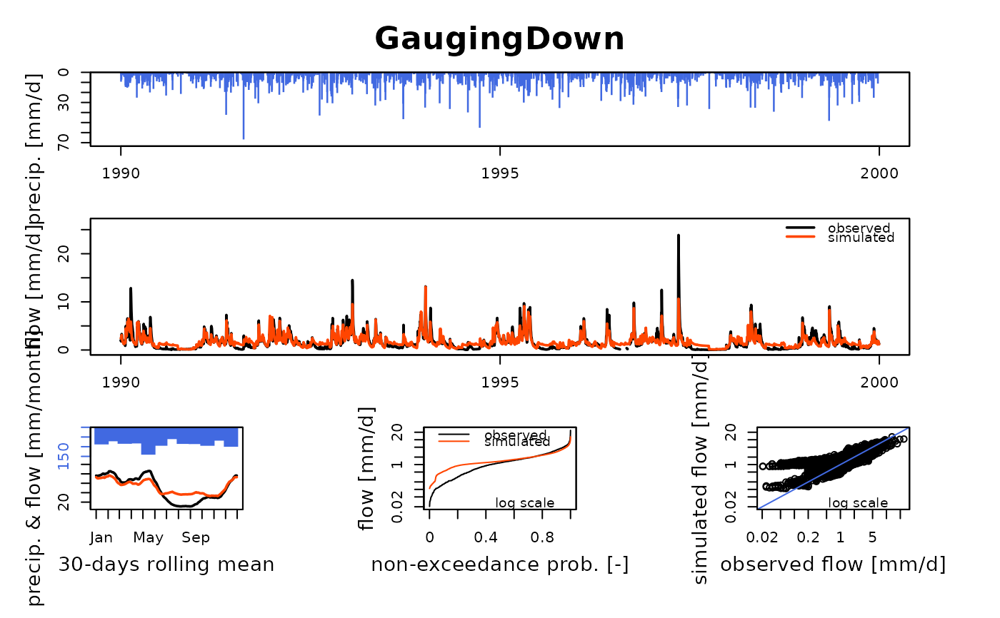

CreateGRiwrm.RdGeneration of a network description containing all hydraulic nodes and the description of their connections
CreateGRiwrm(
db,
cols = list(id = "id", down = "down", length = "length", model = "model", area =
"area"),
keep_all = FALSE
)data.frame description of the network (See details)
list or vector columns of db. By default, mandatory column names are: id, down, length. Other names can be handled with a named list or vector containing items defined as "required name" = "column name in db"
logical indicating if all columns of db should be kept or if only columns defined in cols should be kept
data.frame of class GRiwrm describing the airGR semi-distributed model network, with each line corresponding to a location on the river network and with the following columns:
id (character): node identifier
down (character): identifier of the node downstream of the current node (NA for the most downstream node)
length (numeric): hydraulic distance to the downstream node in km (NA for the most downstream node)
area (numeric): total area of the basin starting from the current node location in km2
model (character): hydrological model to use if necessary (NA for using observed flow instead of a runoff model output)
db is a data.frame which at least contains in its columns:
a node identifier (column id),
the identifier and the hydraulic distance to the downstream node (character columns down and numeric columns length in km). The last downstream node should have fields down and length set to NA,
the area of the basin (numeric column area in km2)
the hydrological model to use if necessary (character column model) (NA for using observed flow instead of a runoff model output)
###################################################################
# Run the `airGR::RunModel_Lag` example in the GRiwrm fashion way #
# Simulation of a reservoir with a purpose of low-flow mitigation #
###################################################################
## ---- preparation of the InputsModel object
## loading package and catchment data
library(airGRiwrm)
data(L0123001)
## ---- specifications of the reservoir
## the reservoir withdraws 1 m3/s when it's possible considering the flow observed in the basin
Qupstream <- matrix(-sapply(BasinObs$Qls / 1000 - 1, function(x) {
min(1, max(0, x, na.rm = TRUE))
}), ncol = 1)
## except between July and September when the reservoir releases 3 m3/s for low-flow mitigation
month <- as.numeric(format(BasinObs$DatesR, "%m"))
Qupstream[month >= 7 & month <= 9] <- 3
Qupstream <- Qupstream * 86400 ## Conversion in m3/day
## the reservoir is not an upstream subcachment: its areas is NA
BasinAreas <- c(NA, BasinInfo$BasinArea)
## delay time between the reservoir and the catchment outlet is 2 days and the distance is 150 km
LengthHydro <- 150
## with a delay of 2 days for 150 km, the flow velocity is 75 km per day
Velocity <- (LengthHydro * 1e3 / 2) / (24 * 60 * 60) ## Conversion km/day -> m/s
# This example is a network of 2 nodes which can be describe like this:
db <- data.frame(id = c("Reservoir", "GaugingDown"),
length = c(LengthHydro, NA),
down = c("GaugingDown", NA),
area = c(NA, BasinInfo$BasinArea),
model = c(NA, "RunModel_GR4J"),
stringsAsFactors = FALSE)
# Create GRiwrm object from the data.frame
griwrm <- CreateGRiwrm(db)
str(griwrm)
#> Classes ‘GRiwrm’ and 'data.frame': 2 obs. of 5 variables:
#> $ id : chr "Reservoir" "GaugingDown"
#> $ down : chr "GaugingDown" NA
#> $ length: num 150 NA
#> $ model : chr NA "RunModel_GR4J"
#> $ area : num NA 360
# Formatting observations for the hydrological models
# Each input data should be a matrix or a data.frame with the good id in the name of the column
Precip <- matrix(BasinObs$P, ncol = 1)
colnames(Precip) <- "GaugingDown"
PotEvap <- matrix(BasinObs$E, ncol = 1)
colnames(PotEvap) <- "GaugingDown"
# Observed flows contain flows that are directly injected in the model
Qobs = matrix(Qupstream, ncol = 1)
colnames(Qobs) <- "Reservoir"
# Creation of the GRiwrmInputsModel object (= a named list of InputsModel objects)
InputsModels <- CreateInputsModel(griwrm,
DatesR = BasinObs$DatesR,
Precip = Precip,
PotEvap = PotEvap,
Qobs = Qobs)
#> CreateInputsModel.GRiwrm: Treating sub-basin GaugingDown...
str(InputsModels)
#> List of 1
#> $ GaugingDown:List of 11
#> ..$ DatesR : POSIXlt[1:10593], format: "1984-01-01" "1984-01-02" ...
#> ..$ Precip : num [1:10593] 4.1 15.9 0.8 0 0 0 0 0 2.9 0 ...
#> ..$ PotEvap : num [1:10593] 0.2 0.2 0.3 0.3 0.1 0.3 0.4 0.4 0.5 0.5 ...
#> ..$ Qupstream : num [1:10593, 1] -86400 -86400 -86400 -86400 -86400 -86400 -86400 -86400 -86400 -86400 ...
#> .. ..- attr(*, "dimnames")=List of 2
#> .. .. ..$ : NULL
#> .. .. ..$ : chr "Reservoir"
#> ..$ LengthHydro : Named num 150
#> .. ..- attr(*, "names")= chr "Reservoir"
#> ..$ BasinAreas : Named num [1:2] NA 360
#> .. ..- attr(*, "names")= chr [1:2] "Reservoir" "GaugingDown"
#> ..$ id : chr "GaugingDown"
#> ..$ down : chr NA
#> ..$ UpstreamNodes : chr "Reservoir"
#> ..$ UpstreamIsRunoff: logi FALSE
#> ..$ FUN_MOD : chr "RunModel_GR4J"
#> ..- attr(*, "class")= chr [1:4] "InputsModel" "daily" "GR" "SD"
#> - attr(*, "class")= chr [1:2] "GRiwrmInputsModel" "list"
#> - attr(*, "GRiwrm")=Classes ‘GRiwrm’ and 'data.frame': 2 obs. of 5 variables:
#> ..$ id : chr [1:2] "Reservoir" "GaugingDown"
#> ..$ down : chr [1:2] "GaugingDown" NA
#> ..$ length: num [1:2] 150 NA
#> ..$ model : chr [1:2] NA "RunModel_GR4J"
#> ..$ area : num [1:2] NA 360
#> - attr(*, "TimeStep")= num 86400
## run period selection
Ind_Run <- seq(which(format(BasinObs$DatesR, format = "%Y-%m-%d")=="1990-01-01"),
which(format(BasinObs$DatesR, format = "%Y-%m-%d")=="1999-12-31"))
# Creation of the GriwmRunOptions object
RunOptions <- CreateRunOptions(InputsModels,
IndPeriod_Run = Ind_Run)
#> Warning: model warm up period not defined: default configuration used
#> the year preceding the run period is used
str(RunOptions)
#> List of 1
#> $ GaugingDown:List of 8
#> ..$ IndPeriod_WarmUp: int [1:365] 1828 1829 1830 1831 1832 1833 1834 1835 1836 1837 ...
#> ..$ IndPeriod_Run : int [1:3652] 2193 2194 2195 2196 2197 2198 2199 2200 2201 2202 ...
#> ..$ IniStates : num [1:67] 0 0 0 0 0 0 0 0 0 0 ...
#> ..$ IniResLevels : num [1:4] 0.3 0.5 NA NA
#> ..$ Outputs_Cal : chr [1:2] "Qsim" "Param"
#> ..$ Outputs_Sim : Named chr [1:24] "DatesR" "PotEvap" "Precip" "Prod" ...
#> .. ..- attr(*, "names")= chr [1:24] "" "GR1" "GR2" "GR3" ...
#> ..$ FortranOutputs :List of 2
#> .. ..$ GR: chr [1:18] "PotEvap" "Precip" "Prod" "Pn" ...
#> .. ..$ CN: NULL
#> ..$ FeatFUN_MOD :List of 12
#> .. ..$ CodeMod : chr "GR4J"
#> .. ..$ NameMod : chr "GR4J"
#> .. ..$ NbParam : num 5
#> .. ..$ TimeUnit : chr "daily"
#> .. ..$ Id : logi NA
#> .. ..$ Class : chr [1:2] "daily" "GR"
#> .. ..$ Pkg : chr "airGR"
#> .. ..$ NameFunMod : chr "RunModel_GR4J"
#> .. ..$ TimeStep : num 86400
#> .. ..$ TimeStepMean: int 86400
#> .. ..$ CodeModHydro: chr "GR4J"
#> .. ..$ IsSD : logi TRUE
#> ..- attr(*, "class")= chr [1:3] "RunOptions" "daily" "GR"
#> - attr(*, "class")= chr [1:2] "list" "GRiwrmRunOptions"
# Parameters of the SD models should be encapsulated in a named list
ParamGR4J <- c(X1 = 257.238, X2 = 1.012, X3 = 88.235, X4 = 2.208)
Param <- list(`GaugingDown` = c(Velocity, ParamGR4J))
# RunModel for the whole network
OutputsModels <- RunModel(InputsModels,
RunOptions = RunOptions,
Param = Param)
#> RunModel.GRiwrmInputsModel: Treating sub-basin GaugingDown...
str(OutputsModels)
#> List of 1
#> $ GaugingDown:List of 23
#> ..$ DatesR : POSIXlt[1:3652], format: "1990-01-01" "1990-01-02" ...
#> ..$ PotEvap : num [1:3652] 0.3 0.4 0.4 0.3 0.1 0.1 0.1 0.2 0.2 0.3 ...
#> ..$ Precip : num [1:3652] 0 9.3 3.2 7.3 0 0 0 0 0.1 0.2 ...
#> ..$ Prod : num [1:3652] 196 199 199 201 200 ...
#> ..$ Pn : num [1:3652] 0 8.9 2.8 7 0 0 0 0 0 0 ...
#> ..$ Ps : num [1:3652] 0 3.65 1.12 2.75 0 ...
#> ..$ AE : num [1:3652] 0.2833 0.4 0.4 0.3 0.0952 ...
#> ..$ Perc : num [1:3652] 0.645 0.696 0.703 0.74 0.725 ...
#> ..$ PR : num [1:3652] 0.645 5.946 2.383 4.992 0.725 ...
#> ..$ Q9 : num [1:3652] 1.78 1.52 3.86 3.17 3.45 ...
#> ..$ Q1 : num [1:3652] 0.2 0.195 0.271 0.387 0.365 ...
#> ..$ Rout : num [1:3652] 53.9 53.6 55.3 56.1 56.9 ...
#> ..$ Exch : num [1:3652] 0.181 0.18 0.176 0.197 0.207 ...
#> ..$ AExch1 : num [1:3652] 0.181 0.18 0.176 0.197 0.207 ...
#> ..$ AExch2 : num [1:3652] 0.181 0.18 0.176 0.197 0.207 ...
#> ..$ AExch : num [1:3652] 0.362 0.36 0.353 0.393 0.414 ...
#> ..$ QR : num [1:3652] 2.05 1.99 2.36 2.55 2.78 ...
#> ..$ QD : num [1:3652] 0.381 0.375 0.447 0.584 0.572 ...
#> ..$ Qsim : num [1:3652] 2.43 2.37 2.56 2.9 3.11 ...
#> ..$ RunOptions:List of 3
#> .. ..$ WarmUpQsim : num [1:365] 0.539 0.575 0.807 0.731 0.674 ...
#> .. ..$ Param : Named num [1:5] 0.868 257.238 1.012 88.235 2.208
#> .. .. ..- attr(*, "names")= chr [1:5] "" "" "" "" ...
#> .. ..$ WarmUpQsim_m3: num [1:365] NA NA NA NA NA NA NA NA NA NA ...
#> ..$ StateEnd :List of 4
#> .. ..$ Store :List of 4
#> .. .. ..$ Prod: num 189
#> .. .. ..$ Rout: num 48.9
#> .. .. ..$ Exp : num NA
#> .. .. ..$ Int : num NA
#> .. ..$ UH :List of 2
#> .. .. ..$ UH1: num [1:20] 0.514 0.54 0.148 0 0 ...
#> .. .. ..$ UH2: num [1:40] 0.056306 0.057176 0.042254 0.012188 0.000578 ...
#> .. ..$ CemaNeigeLayers:List of 4
#> .. .. ..$ G : num NA
#> .. .. ..$ eTG : num NA
#> .. .. ..$ Gthr : num NA
#> .. .. ..$ Glocmax: num NA
#> .. ..$ SD :List of 1
#> .. .. ..$ : num [1:3] -86400 -86400 -86400
#> .. ..- attr(*, "class")= chr [1:3] "IniStates" "daily" "GR"
#> ..$ Qsim_m3 : num [1:3652] 875333 851839 922461 1042434 1119947 ...
#> ..$ QsimDown : num [1:3652] 2.43 2.37 2.8 3.14 3.35 ...
#> ..- attr(*, "class")= chr [1:4] "OutputsModel" "daily" "GR" "SD"
#> - attr(*, "class")= chr [1:2] "GRiwrmOutputsModel" "list"
#> - attr(*, "Qm3s")=Classes ‘Qm3s’ and 'data.frame': 3652 obs. of 3 variables:
#> ..$ DatesR : POSIXct[1:3652], format: "1990-01-01" "1990-01-02" ...
#> ..$ Reservoir : num [1:3652] -1 -1 -1 -1 -1 -1 -1 -1 -1 -1 ...
#> ..$ GaugingDown: num [1:3652] 10.13 9.86 10.68 12.07 12.96 ...
# Compare Simulation with reservoir and observation of natural flow
plot(OutputsModels, data.frame(GaugingDown = BasinObs$Qmm[Ind_Run]))
